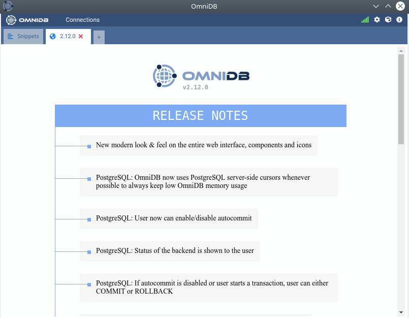
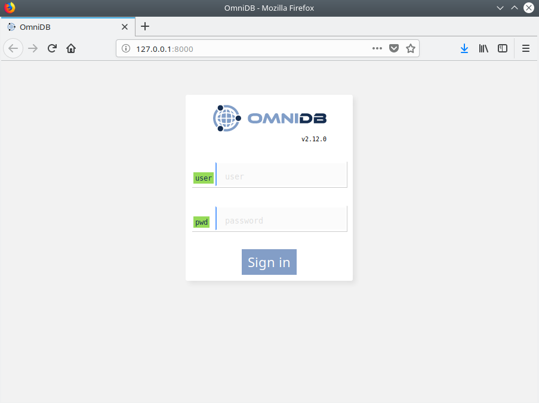

2. Installation
OmniDB provides 2 kinds of packages to fit every user needs:
- OmniDB Application: Runs a web server on a random port behind, and provides a simplified web browser window to use OmniDB interface without any additional setup. Just feels like a desktop application.
- OmniDB Server: Runs a web server on a random port, or a port specified by the user. User needs to connect to it through a web browser. Provides user management, ideal to be hosted on a server on users' networks.
Both application and server can be installed on the same machine.
OmniDB Application
In order to run OmniDB app, you don't need to install any additional piece of software. Just head to omnidb.org and download the latest package for your specific operating system and architecture:
- Linux 64 bits
- DEB installer
- RPM installer
- Windows 64 bits
- EXE installer
- Mac OSX
- DMG installer
Use the specific installer for your Operational System and it will be available
through your desktop environment application menu or via command line with
omnidb-app.

OmniDB Server
Like OmniDB app, OmniDB server doesn't require any additional piece of software and the same options for operating system and architecture are provided.
Use the specific installer for your Operational System and it will be available
through command line with omnidb-server:
user@machine:~$ omnidb-server
Starting OmniDB websocket...
Checking port availability...
Starting websocket server at port 25482.
Starting OmniDB server...
Checking port availability...
Starting server OmniDB 3.1.0 at 0.0.0.0:8000.
Starting migration of user database from version 0.0.0 to version 3.1.0
OmniDB successfully migrated user database from version 0.0.0 to version 3.1.0
Press Ctrl+C to exit
Note how OmniDB starts a websocket server in port 25482 and a web server in port 8000. You can also specify both ports and listening address:
user@machine:~$ omnidb-server -p 8080 -w 25000 -H 127.0.0.1
Starting OmniDB websocket...
Checking port availability...
Starting websocket server at port 25000.
Starting OmniDB server...
Checking port availability...
Starting server OmniDB 3.1.0 at 0.0.0.0:8080.
Starting migration of user database from version 0.0.0 to version 3.1.0
OmniDB successfully migrated user database from version 0.0.0 to version 3.1.0
Press Ctrl+C to exit
OmniDB with Oracle
OmniDB app and server does not require any piece of additional software, as explained above. But if you are going to connect to an Oracle database, then you need to download and install Oracle Instant Client (or extract it to a specific folder, depending on the operating system you use):
- MacOSX: Download Oracle Instant Client
(64-bit)
and extract in
~/lib; - Linux: Download Oracle Instant Client
(32-bit)
(64-bit)
and install it on your system, then set
LD_LIBRARY_PATH; - Windows: Download Oracle Instant Client (32-bit) (64-bit) and extract it into OmniDB's folder.
Note for Windows users using OmniDB app: For OmniDB 2.8 and above, you will
need to extract Oracle Instant Client libraries inside of folder
OMNIDBAPPINSTALLFOLDER\resources\app\omnidb-server.
OmniDB User Database
Since version 2.4.0, upon initialization both server and app will create a file
~/.omnidb/omnidb-app/omnidb.db (for OmniDB app) or
~/.omnidb/omnidb-server/omnidb.db (for OmniDB server) in the user home
directory, if it does not exist. That can be confirmed by the message OmniDB
successfully migrated user database from version 0.0.0 to version 2.4.0 you saw
above. This file is also called user database and contains user data. If it
already exists, then OmniDB will check whether the version of the server matches
the version of the user database:
user@machine:~$ omnidb-server
Starting OmniDB websocket...
Checking port availability...
Starting websocket server at port 25482.
Starting OmniDB server...
Checking port availability...
Starting server OmniDB 3.1.0 at 0.0.0.0:8000.
User database version 3.1.0 is already matching server version.
Press Ctrl+C to exit
Future releases of OmniDB will contain the user database migration SQL commands required to upgrade the user database, if necessary. This way user data is not lost by upgrading OmniDB. Imagine the following scenario: you use OmniDB 2.4.0 now and you decide to upgrade it to newest release 2.5.0, for example. After the upgrade, when you start OmniDB server, it will apply the changes version 2.5.0 requires. So you will see something like that:
user@machine:~$ omnidb-server
Starting OmniDB websocket...
Checking port availability...
Starting websocket server at port 25482.
Starting OmniDB server...
Checking port availability...
Starting server OmniDB 3.2.0 at 0.0.0.0:8000.
Starting migration of user database from version 3.1.0 to version 3.2.0
OmniDB successfully migrated user database from version 3.1.0 to version 3.2.0
Press Ctrl+C to exit
OmniDB configuration file
Starting on version 2.1.0, OmniDB server comes with a configuration file
omnidb.conf that enables the user to specify parameters such as port and
listening address. Also, 2.1.0 enables us to start the server with SSL, this
requires a certificate and is configured in the same configuration file. For
more details about how to deploy the OmniDB server, please read Chapter 19.
Starting on version 2.4.0, this file is located in
~/.omnidb/omnidb-server/omnidb.conf in the user home directory.
OmniDB in the browser
Now that the web server is running, you may access OmniDB browser-based app on
your favorite browser. Type in address bar: localhost:8000 and hit Enter. If
everything went fine, you shall see a page like this:

Now you know that OmniDB is running correctly. In the next chapters, we will see how to login for the first time, how to create an user and to utilize OmniDB.